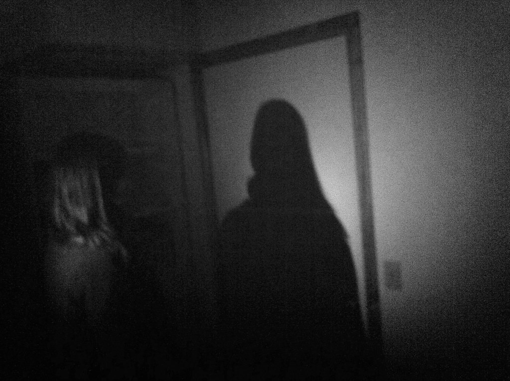

Lo que Respondió Cuando Recé al Revés

Estábamos aburridos en una pijamada y alguien dijo que recitar una oración al revés atraía “cosas”.
Era una tontería.
Hasta que lo hice.
A mitad de la oración, la temperatura bajó.
No como una corriente de aire: fue como si algo respirara hacia adentro, absorbiendo el calor de la habitación.
Cuando terminé, hubo silencio.
Y luego, desde un rincón oscuro, una voz idéntica a la mía dijo:
—Ya no necesito que me llames.
Todos lo escucharon.
La luz se apagó sola.
Y en la oscuridad, esa misma voz siguió repitiendo frases que jamás dije.
No recé nada más.
Pero cada noche, justo antes de dormir, escucho mi propia voz susurrando desde debajo de la cama… diciendo que algún día nos vamos a “intercambiar”.